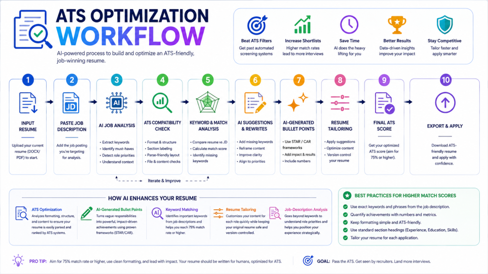
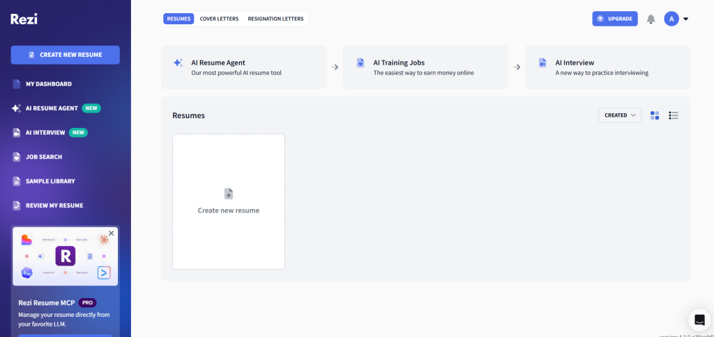
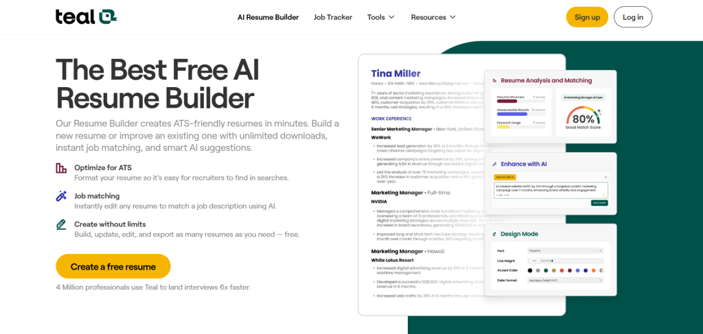
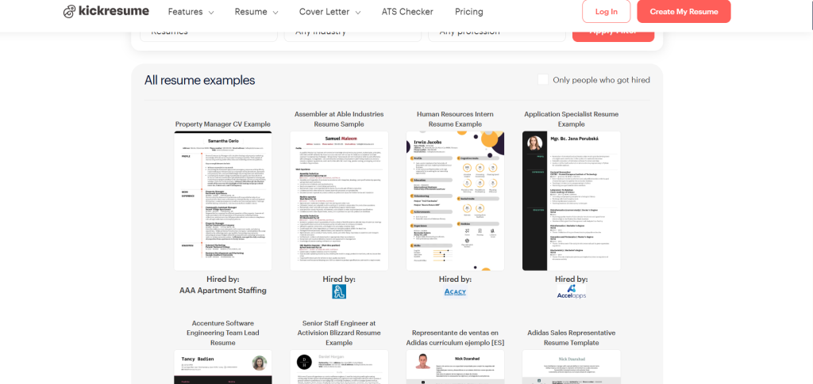
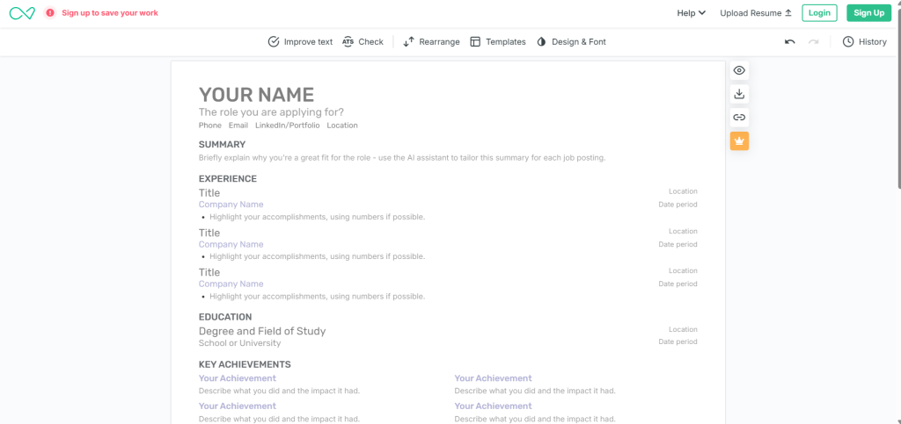
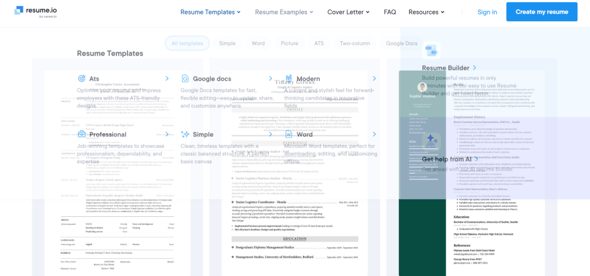
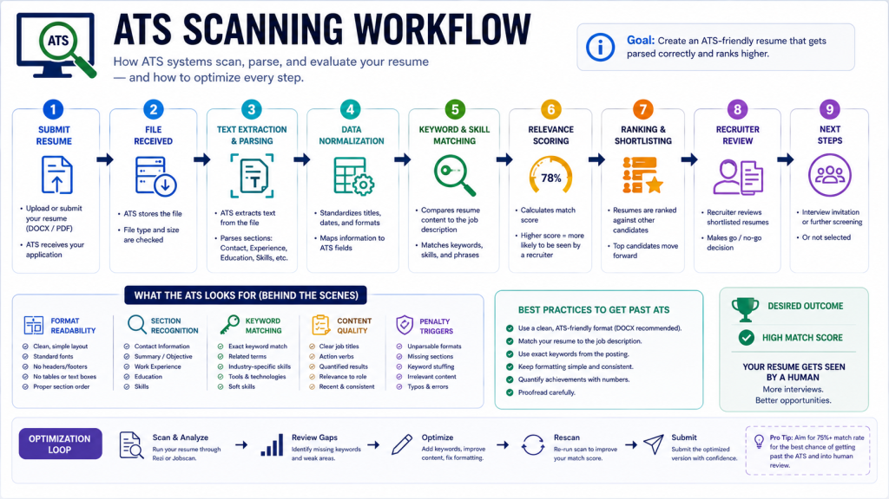

Introduction: Why Most Resumes Die Before a Human Ever Reads Them
Here's an uncomfortable truth about modern job searching: your resume probably isn't being read — it's being filtered.
Nearly 99% of Fortune 500 companies use Applicant Tracking Systems (ATS) to screen candidates before a recruiter ever opens a single file. These systems scan your resume for specific keywords, check your formatting for parsing errors, and score your relevance against the job description — all in a matter of seconds. Over 70% of resumes get rejected by these systems before reaching human eyes.
And the causes aren't always what you'd expect. Technical issues cause 43% of rejections, with parsing errors at 23% and formatting problems at 12%. Resumes listing over 20 separate skills face 67% rejection rates, compared to 34% when skills integrate smoothly.
That's where AI resume builders come in. These tools are built to do what manual resume writing can't do efficiently: analyze job descriptions in real time, flag missing keywords, suggest achievement-focused bullet points, and export clean files that ATS systems can actually read without breaking.
But "ATS-friendly" is a marketing claim that needs scrutiny. Some tools genuinely optimize for ATS parsing. Others use clean templates and call it optimization. The difference matters enormously when you're applying to competitive roles.
In this guide, we tested the most widely used AI resume builders of 2026 across ATS performance, AI writing quality, design, ease of use, and real value. You'll get an honest picture of what each tool does well, where it falls short, and which one fits your specific situation.
Quick Picks
If you're in a hurry, here's the short version before the deep dive.
Best overall AI resume builder: Rezi, for deepest ATS scoring and strongest keyword targeting. Best free option: Teal, which offers unlimited resume versions and a job tracker on a genuinely useful free plan. Best for ATS optimization: Rezi, with real-time 23-criterion scoring validated across major enterprise platforms. Best for creatives: Enhancv, offering design-forward templates with ATS checking built in. Best for tech jobs: Rezi, with structured templates purpose-built for technical hiring pipelines. Best for career changers: Kickresume, with the strongest AI-generated first drafts for pivoting narratives. Best all-in-one platform: Resume.io, beginner-friendly and bundled with job matching and application tracking.
What Are AI Resume Builders?
At a basic level, AI resume builders are software platforms that use machine learning and natural language processing to help you create, optimize, and tailor resumes. But what separates genuinely useful tools from glorified template editors comes down to a few specific capabilities.
ATS optimization means the tool analyzes your document against the same criteria ATS software uses — keyword presence, formatting structure, section labeling, parse-friendly layouts — and tells you where you're falling short. Not every tool that claims this actually delivers it.
AI-generated bullet points translate vague descriptions like "managed projects" into impact-oriented statements. Good AI writers use STAR (Situation, Task, Action, Result) or CAR (Challenge, Action, Result) frameworks to push you toward quantified achievements rather than duty lists.
Keyword matching pulls exact phrases from a specific job posting and compares them against your current resume. Jobscan recommends aiming for a 75% match rate or higher. Most platforms let you paste a job description directly to generate this analysis.
Resume tailoring is the practical output of keyword matching — actually rewriting or suggesting changes so your content aligns with a specific posting. The best tools make this fast and version-controlled, so you can tailor for dozens of roles without losing your original document.
Job-description analysis goes further, identifying not just keywords but the implied priorities of a role — whether it emphasizes leadership, technical depth, client management, or cost savings — and adjusting your framing accordingly.

How We Tested These Resume Builders?
To give this guide real grounding, we ran structured tests rather than just comparing feature lists.
We started with a standard profile: a mid-career professional with seven years of experience in marketing, applying to five real job postings sourced from LinkedIn, Indeed, and Glassdoor. We ran the same resume through each tool, then tested outputs against five enterprise ATS platforms — Workday, Greenhouse, Lever, iCIMS, and Taleo — measuring parse accuracy, keyword match scores, and pass rates against a standard 60% threshold used by most recruiters.
Beyond ATS performance, we evaluated each tool on AI writing quality — whether the generated bullet points actually sounded human or assembled like a keyword list. We measured keyword optimization accuracy, asking how reliably each tool identified relevant terms from a real job description. We assessed design quality and whether visual choices created ATS conflicts. We tracked ease of use, noting how long it took to go from blank page to a complete document. We tested customization flexibility, checking whether you could meaningfully personalize the output or were locked into templates. We examined export quality, verifying that PDF and Word files actually looked right and parsed correctly. And we tested free tier honesty — because many tools advertise free plans that don't actually let you download anything useful.
The results confirmed what experienced job seekers already suspect: the gap between a good AI resume tool and a mediocre one is bigger than most people realize.
Best AI Resume Builders of 2026
Rezi — Best for ATS Optimization and Technical Roles

Rezi built its reputation on one thing: making sure your resume survives ATS software. It is the most disciplined, ATS-first platform in this comparison, and that philosophy shapes everything about the experience.
You start from scratch or import a LinkedIn profile or existing document. Rezi guides you into structured fields — no blank-page paralysis, no formatting freedom that might accidentally break your ATS compatibility. Once your content is in, you paste a target job description. The platform analyzes it, highlights missing keywords, and flags issues with your bullet structure, verb tense, quantification, and formatting. The Rezi Score is a number from 1 to 100 based on 23 optimization criteria that updates in real time as you edit. The AI scans job descriptions and highlights keywords you should incorporate, and the bullet point generator focuses on metrics and achievements.
What Rezi does well is considerable. The real-time scoring is genuinely useful rather than a vanity metric. Keyword targeting pulls exact phrases from job descriptions and shows you precisely what is missing. The AI Bullet Writer generates STAR-method achievement bullets from minimal input. Rezi's templates are intentionally simple so that Applicant Tracking Systems can easily parse important information such as job titles, skills, and employment dates. The $149 lifetime plan is rare in this market and represents good value for anyone in a multi-month search.
What Rezi does not do well is equally important to understand. Design is intentionally minimal — the tool values correctness over flexibility, and Rezi actively prevents you from making certain choices. You cannot freely move sections around, introduce unconventional formatting, or treat the resume as a creative artifact. That rigidity is intentional. The free tier is very restricted — one resume and three total downloads, not monthly. It is not ideal for creative or design-heavy roles where visual differentiation matters.
ATS performance is among the strongest tested. Rezi, along with dedicated scanner tools, consistently cleared 86% or higher pass rates because it reads the job description and adjusts the resume content accordingly. The plain-text export option for older systems like Taleo is a thoughtful practical touch.
Pricing runs free with heavy limitations, Pro at $29 per month, and annual or lifetime options at $149.
Best for tech professionals, finance candidates, corporate job seekers in ATS-heavy industries, and anyone who wants maximum confidence that their resume will not fail for technical reasons.
Practical workflow tip: build one master Rezi resume with your full experience, then create tailored copies for each application by pasting the specific job description and following the keyword gap report. The version control makes this far more manageable than it sounds.
Teal — Best for Full Job Search Management

Teal is less a resume builder and more a job search operating system. The resume creation features are solid, but the real differentiator is what surrounds them: a Chrome extension that saves job postings from any site, an integrated tracker that organizes your entire pipeline, and AI analysis that scores how well your resume matches each specific role.
Teal, trusted by 3.2 million users and rated 4.9 out of 5 in the Chrome Web Store, goes beyond scanning with AI-generated bullet points matched to job descriptions. It organizes applications, tracks progress, and claims 58% faster job search timelines, 6x more interviews, and 40% time savings.
How it works: you build a master resume inside Teal, then use the job tracker to save roles you are targeting. For each role, Teal analyzes your resume against the job description, gives you a match score, and suggests tailored bullet points and keyword additions. The whole workflow is designed for people applying to multiple roles simultaneously.
What Teal does well includes a genuinely free core plan with unlimited resume versions and unlimited downloads — a meaningful distinction in a market full of download paywalls. The Chrome extension pulls job details directly from listings, saving you copy-paste time on every application. Match scoring against specific job descriptions is actionable and clearly explained. The job tracker turns chaotic application spreadsheets into a structured pipeline. Teal's April 2026 LinkedIn import update significantly improved how it handles complex multi-role career histories that previously required manual correction.
Where Teal falls short: advanced AI writing features require the paid Teal+ plan. Resume design is functional rather than distinctive — not the tool for roles where visual presentation matters. The platform is feature-dense enough that first-time users can feel overwhelmed before they get comfortable with the layout.
ATS performance is strong. Teal's keyword analysis reliably identifies what is missing from your resume relative to a specific posting, and its templates are clean enough to parse well across major systems — though not at Rezi's depth of scoring.
Pricing is free for the genuinely useful core plan, with Teal+ at approximately $13 per week or $29 per month for advanced AI features.
Best for active job seekers managing 20 or more applications simultaneously, organized personalities who want a single dashboard for their entire search, and budget-conscious users who need unlimited resume versions without paying anything.
Kickresume — Best for AI Writing Quality and Fast Generation

If you are staring at a blank resume with no idea how to start, Kickresume is probably your fastest path from zero to a complete, submission-ready document.
Its GPT-4 AI resume writer generates complete resume sections from scratch based on your job title and background, with over 40 professional templates designed by typographers and HR experts with full customization options. The personal website builder converts your completed resume into a professional portfolio website with one click.
Kickresume produces the strongest first drafts for career summaries and bullets among the tools tested. Career summaries, work experience bullets, and skills sections that Kickresume generates tend to require less human editing than equivalent output from Teal or Rezi. That is a meaningful time difference across a full job search.
What Kickresume does well beyond writing quality: the free plan includes four basic templates, unlimited downloads, and access to pre-written phrases — genuinely usable without paying. Students and teachers get six months of free premium access with verification. Cover letter generation uses the same AI quality as the resume builder. The template variety makes it easier to find a design that fits your industry and experience level.
Where Kickresume falls short: template quality for ATS varies widely. Several of the visually distinctive templates caused field extraction errors in iCIMS. Users should select from templates explicitly labeled ATS-friendly to avoid parse issues. Kickresume's overall ATS pass rate of 75% trailed Rezi's in head-to-head testing — a real gap for competitive roles at large companies.
Pricing runs free for four templates with unlimited downloads. Monthly plans at $24, half-yearly at $14 per month billed every six months, and a student or teacher plan free for six months with proof of status.
Best for career changers who need a compelling narrative built from scratch, people struggling to articulate their experience in writing, marketers and communicators who value writing quality, and anyone who needs a portfolio website alongside their resume.
Enhancv — Best for Creative and Personality-Forward Resumes

Enhancv sits at the intersection of professional and personal. Its templates include creative sections — highlights, strengths, personality traits — that no other tool in this comparison offers. For roles where those signals matter — marketing, design, product, brand strategy — that differentiation can work in your favor.
The important caveat: Enhancv's achievement-framing AI is genuinely useful for human readers. However, Enhancv offers creative section types — My Time, Strengths, Passions — that no ATS tested could parse into structured fields. Resumes using those sections had 8 to 12 percentage points lower match scores than resumes that used only standard sections. For competitive roles at large companies with enterprise ATS, this is a real risk that many users discover too late.
What Enhancv does well: the most visually distinctive templates in this comparison — genuine standout quality for the right roles. One-click tailoring to job descriptions works quickly. A 7-day full-access trial gives you enough time to evaluate before committing. Enhancv has basic ATS-passing designs in its standard template subset, which are labeled clearly in the builder.
Where Enhancv falls short: pricing at $29.99 per month or $19.99 per month annual is on the higher end of the AI resume builder category. For candidates running long job searches, multiple roles per year, or wanting integrated interview prep, the per-month cost adds up compared to alternatives. There is no integrated job tracker — Enhancv is purely a resume builder.
Pricing is free basic access with watermarked downloads. Premium at $29.99 per month, $19.99 per month annual, or $149 lifetime.
Best for marketers, designers, UX professionals, brand strategists, and creatives applying directly to companies where a visually polished resume can signal attention to craft. Notably less ideal for large-company corporate applications where ATS rigor matters most. When using Enhancv for visual roles, always select from the explicitly ATS-labeled template subset for any role that goes through an online application portal.
Resume.io — Best All-in-One Platform for Beginners

Resume.io is the most beginner-friendly tool in this list by a meaningful margin. The builder asks guided questions, suggests keywords, and produces a complete document from your answers without requiring you to know what a strong resume looks like beforehand.
A detailed breakdown of the platform's workflow is available in the Resume.io review — which covers the practical onboarding experience and job tracking features in context.
Resume.io features an AI builder that creates resumes from questionnaires, refines sections with content suggestions, and ensures ATS compatibility. It pulls job recommendations from a 9 million posting pool and includes proofreading.
What Resume.io does well: the most accessible onboarding experience in this comparison, genuinely suitable for first-time resume builders. Resume.io offers professional templates that make you 39% more likely to get hired and earn 8% better pay, according to the platform's data. Job matching from 9 million postings is useful for discovery. Pro plans include proofreading and application tracking. The template library covers professional, modern, creative, and executive styles across 40-plus options.
Where Resume.io falls short: the free plan only lets you download in TXT format, which is not sufficient for most real applications. The trial pricing structure runs approximately $1.45 to $2.95 for 14-day full access, then approximately $24.95 per month — a structure that has surprised some users who did not read the pricing page carefully. ATS keyword optimization is not as deep as Rezi or Teal for granular keyword-level analysis.
Pricing is free with TXT-only downloads. Approximately $2.95 trial for 14 days, then approximately $24.95 per month, with significant discounts on annual plans.
Best for recent graduates, entry-level candidates, job seekers new to resume building altogether, and anyone who wants a single beginner-friendly platform for resumes, job matching, and application tracking under one roof.
Best AI Resume Builders by Use Case
Students and recent graduates should start with Kickresume's free plan and its student premium discount. The AI-generated first draft is especially helpful when work experience is thin and you are not sure how to frame limited history into a compelling document.
Career changers benefit most from Kickresume's AI writing quality, which handles narrative pivoting better than most tools. It can build a compelling story from adjacent experience when you cannot simply list the same job titles as other applicants. Pair it with a dedicated ATS scan from Jobscan's free tier to validate keyword coverage for your target field.
Software engineers should use Rezi without much debate. The strict ATS structure, keyword targeting, and technical template set are purpose-built for roles where Workday, Greenhouse, and Lever parsing are the gatekeepers. Rezi's discipline around formatting prevents the layout errors that trip up technical resumes in automated screening.
Marketers have a real choice to make depending on where they are applying. For roles at agencies or creative companies, Enhancv's design differentiation can work in your favor. For large corporate marketing roles with ATS-heavy hiring, default to Rezi or Kickresume with ATS-labeled templates. Showcasing relevant skills in AI marketing strategies and performance channel fluency in your resume has become increasingly valuable in 2026 — make sure your tool highlights these capabilities clearly in your bullet points rather than burying them in a skills list.
Executives applying for senior roles should use Enhancv for positions where their resume needs to feel distinguished rather than generic. Use standard sections only and combine with Rezi's ATS check if the role involves large-company hiring processes.
Freelancers benefit from Kickresume's portfolio website builder, which turns your resume into a landing page that clients can visit. Teal's job tracker is useful if you are juggling multiple client proposals simultaneously and want to keep your pipeline organized.
Creative professionals applying to design, brand, or content roles should use Enhancv for presentation quality. If you are a creator building a multimedia portfolio alongside your resume, AI tools for content creation can help you produce strong portfolio samples to supplement your application. For voice and audio roles specifically, demonstrating production skill through samples created with tools like Murf AI and linking them directly from your resume gives you a meaningful edge over applicants who only submit a document.
Comparison Table
| Tool | Best For | ATS Optimization | Ease of Use | AI Writing Quality | Design Quality | Free Plan | Starting Price | Biggest Strength | Biggest Weakness |
|---|---|---|---|---|---|---|---|---|---|
| Rezi | ATS-heavy roles, tech | Excellent | Medium | Strong | Minimal | Very limited (1 resume, 3 downloads lifetime) | $29 per month | 23-criterion real-time ATS scoring | Rigid formatting, minimal design freedom |
| Teal | Multi-application management | Strong | Easy | Strong | Functional | Generous (unlimited resumes and downloads) | $13 per week for Teal+ | Free job tracker plus AI resume matching | Advanced AI locked behind paid plan |
| Kickresume | Career changers, creatives | Good (template-dependent) | Easy | Best in class | Excellent | Good (4 templates, unlimited downloads) | $14 to $24 per month | Best AI-generated first drafts | Template-dependent ATS performance |
| Enhancv | Creative and visual roles | Mixed | Easy | Strong | Best in class | Limited (7-day trial only) | $19.99 to $29.99 per month | Most distinctive visual templates | High price, creative templates hurt ATS scores |
| Resume.io | Beginners, all-in-one | Good | Very Easy | Moderate | Strong | Limited (TXT only) | $2.95 trial then approximately $24.95 per month | Best beginner onboarding plus job matching | Weak keyword optimization depth |
Choosing between them comes down to your primary constraint. If ATS performance is your priority, Rezi wins without much competition. If you are managing a complex search across multiple roles simultaneously, Teal's free plan and job tracker make it the most useful day-to-day companion. If you need a compelling resume written quickly for a career change, Kickresume's generation quality is the best in this group. If you are in a creative field and presentation matters to the companies you are targeting, Enhancv delivers — but only use its ATS-certified templates for corporate applications. If you are starting from scratch and want guided simplicity, Resume.io.
The most sophisticated approach combines two tools: a strong AI writer such as Kickresume or Teal for content generation, paired with a dedicated ATS scanner such as Rezi or Jobscan's free tier for keyword validation before submission.
Real Resume Workflow Examples
Tailoring for multiple applications works best inside Teal. Build one strong master resume, then for each new application save the job listing with the Chrome extension, run the match score analysis, and create a tailored version using Teal's AI suggestions. Keep all versions in your job tracker. This workflow scales to 30-plus applications without losing control of which version went where — a real operational challenge for high-volume job seekers.
Using LinkedIn imports saves meaningful time. Both Rezi and Kickresume support LinkedIn imports — connect your profile, pull your experience data automatically, then spend your time improving rather than transcribing. Teal's April 2026 LinkedIn import update improved how it handles complex multi-role histories.
The ATS scanning workflow that consistently outperforms single-tool approaches: write your resume in Kickresume for content quality, then before submitting, paste the job description into Rezi or Jobscan's free tier and run a keyword gap analysis. Add missing terms to your Kickresume version, re-export, and submit. This two-tool workflow takes 10 to 15 minutes per application and produces meaningfully better results than either tool alone.

Rewriting weak bullet points starts with your actual outcomes. If your bullets currently read like job duties — "responsible for managing social media accounts" — use Kickresume's AI rewriter or Rezi's Bullet Writer to push them toward achievement framing. Start with a rough description of what you actually accomplished. Let the AI suggest a stronger version. Then edit it until it sounds like your voice, not a template. The AI handles the framework; you provide the substance and the numbers.
Career change resumes benefit from Kickresume's narrative generation. Import your existing experience, then use the AI summary generator to write a career statement that emphasizes transferable skills for your target role rather than your previous job title. Pair this with a cover letter from the same platform to reinforce the pivot. Then run the output through Rezi's keyword analysis for your target job description to catch any obvious gaps before submitting.
Common Mistakes Job Seekers Make
Keyword stuffing rather than keyword integrating is one of the most common errors. Adding keywords to a hidden white-text section or listing them in a dense block without context does not fool modern ATS. Resumes listing over 20 separate skills face 67% rejection rates compared to 34% when skills integrate smoothly into experience descriptions. Keywords should appear naturally in bullet points and role descriptions.
Using AI output without editing it produces generic, interchangeable resumes. AI-generated content is a starting point, not a finished product. Every AI-generated bullet needs at least one review pass where you add your specific data, real metrics, and personal voice. The tools provide the structure; you provide what makes you distinctly qualified.
Choosing templates that look great but parse badly is the mistake that Enhancv and Canva users most commonly report after the fact. A stunning resume that iCIMS or Workday cannot parse is worse than a clean, boring resume that passes every filter. For most roles at established companies, ATS compatibility beats visual creativity.
Generic summaries waste the most valuable real estate on the page. The summary at the top of your resume is the one section human reviewers reliably read. Generic openers like "results-driven professional with a passion for innovation" communicate nothing specific. Use this space to make a concrete, evidence-backed claim about your value for this particular role.
Missing metrics is a structural weakness no AI tool can fully fix on your behalf. "Increased revenue" is weaker than "increased revenue 32% in Q3 2025 through a reactivation campaign targeting lapsed customers." AI tools can suggest the framework, but the numbers have to come from your real experience. Quantify before you let AI enhance — the AI will frame your numbers better than it will invent them.
Not customizing at all remains the single most common resume mistake in 2026. Response rates drop below 3% after 50-plus applications, often due to broad targeting or undetected keyword gaps. Even a 15-minute Teal tailoring session per application consistently outperforms a perfect master resume sent without customization to every role.
Not refreshing your approach when results are poor is a version of the same problem. If you have applied to 30-plus roles with under 3% response rates, something structural needs to change. AI tools surface this data — use it. Low response rates at that volume almost always indicate keyword gaps or targeting issues, not just market conditions.
How to Choose the Right AI Resume Builder?
Budget is the first real filter. If cost is the primary constraint, Teal's free plan is the most genuinely useful free tier in this comparison — unlimited resumes and downloads, real job tracking, and solid AI features. Kickresume's free plan is the best alternative if you do not need job tracking. Avoid any tool that advertises free builds but requires payment to download your finished document.
ATS-heavy industries include tech, finance, healthcare, law, and large corporate environments that use enterprise platforms like Workday, Taleo, and iCIMS. For these roles, Rezi's parsing performance is worth the monthly cost. The tools that scored the highest actual ATS pass rates — Resume Optimizer Pro, Jobscan, and Rezi — were also the tools whose in-platform scores most closely correlated with real ATS parser results. The gap between a 75% and 90-plus percent pass rate compounds across dozens of applications.
Design-heavy industries including marketing agencies, design studios, creative companies, and startups that review resumes manually offer more room for visual differentiation. Enhancv or Kickresume's premium templates are appropriate here, and the design investment pays off when a human is making the first judgment call.
Application volume shapes which tool earns its keep. If you are applying to 30-plus roles per month, Teal's job tracking and version management becomes a genuine workflow multiplier. If you are applying to a focused set of five to ten roles carefully chosen, Rezi's precision optimization justifies the investment in depth over breadth.
Experience level matters more than most tools acknowledge. Beginners benefit significantly from Resume.io's guided approach, which walks you through each section without assuming prior knowledge. Experienced professionals who already understand strong resume structure should start with Kickresume's generation quality for speed, then validate with Rezi.
Pros and Cons of AI Resume Builders
Pros include dramatically reduced time from draft to submission-ready document, identification of keyword gaps that manual proofreading misses, stronger bullet point generation from rough notes, ATS feedback that was previously only available through recruiters or expensive career coaches, easy version control for tailored applications, meaningful free tiers that provide real utility without payment, and optimized AI-generated resumes achieving up to 58% better ATS pass rates compared to unoptimized manual ones.
Cons include generic AI output that requires your real numbers and context to become genuinely strong, "ATS-optimized" as a marketing claim that needs independent verification through actual scanner testing, over-reliance on automation producing resumes that all sound the same and are increasingly recognizable as AI-generated, design-first tools creating ATS compatibility problems for corporate applications, no tool replacing strategic career positioning especially for senior roles or complex transitions, subscription costs that accumulate across a multi-month job search, and recruiter AI detection improving — over-polished AI voice is increasingly recognizable to experienced hiring professionals.
Future of AI Resume Building in 2026 and Beyond
AI career assistants are already emerging. Some platforms — Rezi's conversational AI agent is the current leader — let you ask questions about resume strategy, ATS best practices, and job search tactics in a chat interface rather than requiring you to search elsewhere for answers.
Automated tailoring at scale is the next major frontier. Tools that can tailor your resume to 10 different job descriptions in the time it currently takes to do one — with meaningful rather than templated customization — will reshape high-volume job searching when they arrive at the quality level the market needs.
LinkedIn integration is deepening across every platform. Import accuracy continues to improve, and the gap between your LinkedIn presence and your resume is increasingly treated as one asset to optimize rather than two separate documents maintained independently.
AI interview prep is being bundled into resume platforms — practice answering role-specific questions using the same job description you used to optimize your resume. Several tools already offer this capability, with quality improving rapidly enough that it will likely be standard across the category within a year.
AI-powered job matching is becoming smarter. Resume.io already pulls from a pool of 9 million postings. The next version of this links your resume's demonstrated skills to specific role requirements — surfacing opportunities you would not have thought to search for on your own.
The consistent thread across all of these developments: AI resume tools are moving from document builders toward holistic career workflow platforms. The builders that survive the next wave of competition will be the ones that make the entire process faster and less stressful — not just the document itself.
Final Verdict
Best overall goes to Rezi — the most rigorous ATS optimization available, with real-time scoring that actually changes how you write and what you include.
Best budget option is Teal — the free plan is genuinely useful, the job tracker is the strongest in this category, and you can run a complete job search without spending anything.
Best ATS-focused option is Rezi — no other tool matches its keyword targeting depth and parsing performance validated across Workday, Greenhouse, Lever, iCIMS, and Taleo.
Best creative option is Enhancv — but only for roles where visual presentation is part of the evaluation criteria. Always use standard-section templates for any application that goes through an enterprise ATS.
Best workflow tool is Teal — the Chrome extension, job tracker, and version management system make it the most practically useful platform for an active, organized job search.
The smartest approach combines two tools. Build and write with Kickresume or Teal for content quality, then validate with Rezi or Jobscan's free scanner for ATS confidence before submitting. Total cost for this combination can be as low as zero to $30 per month depending on which tier you actually need.
Frequently Asked Questions
What is the best AI resume builder in 2026?
Which AI resume builder beats ATS systems best?
Are AI-generated resumes good?
Can recruiters detect AI resumes?
What is the best free AI resume builder?
Are AI resume builders worth paying for?
Which AI resume builder is best for tech jobs?
Which AI resume builder is best for creatives?
Building your resume is one part of a strong job search. Pair it with a clear personal brand, a strong LinkedIn presence, and where relevant, portfolio work that shows what you can do — not just what you have done. Explore AI tools for content creation for building portfolio assets that reinforce what your resume claims.